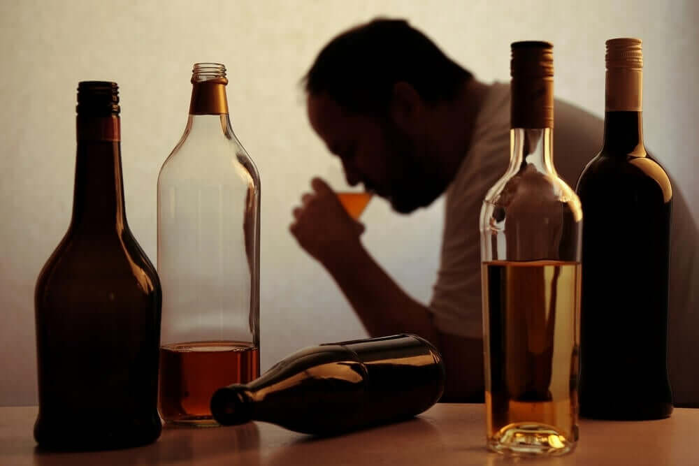
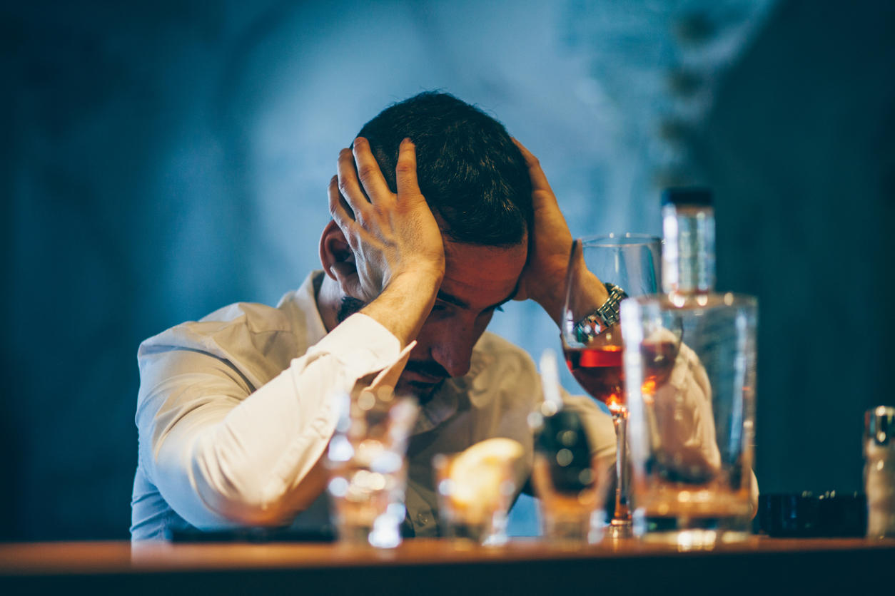

Álcool
Problemas de saúde física:
- Danos ao fígado, como cirrose hepática e hepatite.
- Problemas cardiovasculares, incluindo pressão alta e doenças cardíacas.
- Comprometimento do sistema imunológico e maior suscetibilidade a doenças.
Problemas de saúde mental e social:
- Aumento do risco de desenvolver transtornos mentais, como depressão e ansiedade.
- Problemas no trabalho, nos relacionamentos e nas interações sociais.
- Risco aumentado de violência e comportamentos perigosos.


Como se libertar do vício?
Algumas dicas e estratégias:
- Aceitar que você tem um problema com o álcool é o primeiro passo crucial para a recuperação.
- Programas de reabilitação, tanto ambulatoriais quanto residenciais, podem fornecer estrutura e suporte intensivo para ajudar na recuperação.
- Se ocorrer uma recaída, não desanime. Recomece com sua recuperação e utilize o episódio como uma oportunidade para aprender e ajustar sua abordagem.
- Defina metas claras e realistas para sua recuperação e desenvolva um plano para alcançá-las..
- Envolva-se em atividades e hobbies que não envolvam o consumo de álcool e que mantenham sua mente e corpo ocupados.